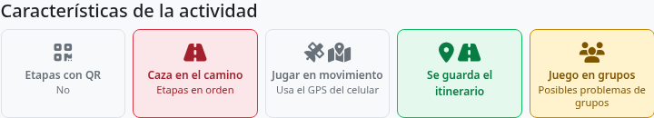
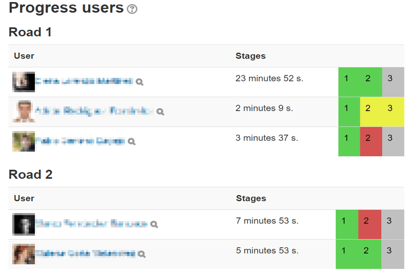

Cómo se organiza el juego por equipos
Treasure Hunt permite jugar individualmente o por equipos Moodle. En modo equipos, los grupos contienen a los estudiantes y los agrupamientos vinculan grupos con un camino. El camino es el recorrido que sigue el equipo; puede diferir de otro en etapas, ubicación o dificultad. El progreso se comparte entre los participantes del equipo.
Prepara grupos y agrupamientos
- En el curso Moodle crea los grupos que participarán y añade a sus integrantes.
- Crea agrupamientos con los grupos correspondientes. Usa nombres que se relacionen con los caminos.
- Configura la actividad Treasure Hunt en modo por equipos.
- Crea y valida cada camino, y asígnale un agrupamiento. Comprueba que ninguno queda sin asignar.
- Abre la actividad como docente y revisa el aviso de grupos. Resuelve los alumnos que no pertenezcan a un grupo válido antes de empezar.
Sigue y apoya a los equipos
El listado de progreso está organizado por camino y secuencia de participantes. Revisa intentos, finalización y calificaciones para detectar quién necesita ayuda. Si se guardan itinerarios, el docente puede consultar los movimientos registrados mientras está abierta la pantalla del juego. Borra un camino o una secuencia solo si realmente necesitas reiniciar esa partida.


Diseña varios caminos
Varios caminos pueden repartir equipos por el espacio, evitar colas en puntos QR u ofrecer variantes comparables. Mantén objetivos educativos equivalentes y prueba cada camino por separado. El editor permite copiar etapas de otro camino; revisa las pistas y geometrías copiadas para que el nuevo recorrido sea coherente.